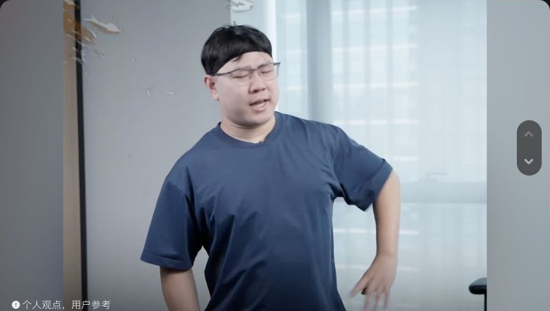
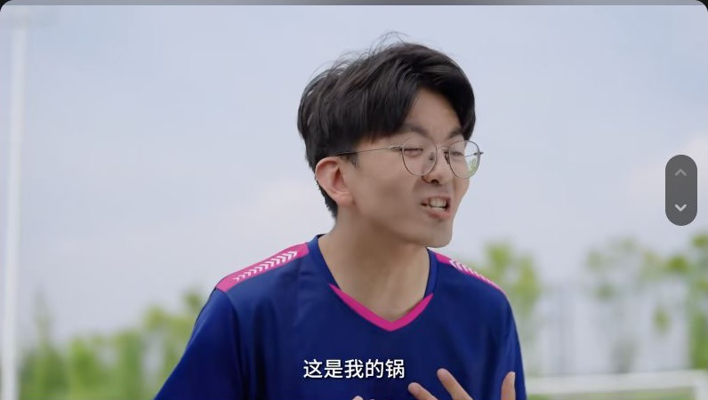
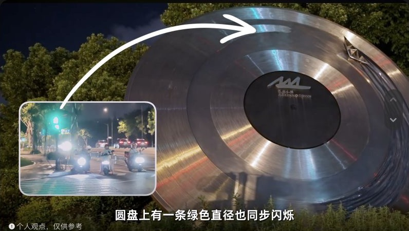

01打开原视频 ↗这个量筒里到底有几毫升水？
把熟悉的刻度读数变成一道挑战题，让观众先判断，再跟着演示验证。
01 / 实践经历
独立研究项目 · 科普内容
围绕毕导的科学科普内容，梳理账号定位、表达方式、团队公开信息与商业合作线索；抽样分析近期 10 条非置顶作品，并把研究整理成交互报告网页和数据表。
02 / 视频案例
以下是毕导抖音主页 2025 年 9 月之后发布的三条公开作品。视频由毕导创作；这里展示的是我在调研中的选题观察与内容拆解。

01打开原视频 ↗把熟悉的刻度读数变成一道挑战题，让观众先判断，再跟着演示验证。

02打开原视频 ↗用反常识的问题制造好奇，再把观众带进具体解释。

03打开原视频 ↗从餐盘上的反光谜题入手，把抽象的光学原理放回生活场景。
原视频与账号归毕导所有 · 点击画面可前往抖音查看
03 / 做事方式
从公开来源和具体样本入手，分清事实与判断。
观察选题、叙事结构、画面和互动反馈。
把研究整理成网页，也把故事做成视频。
工科背景。喜欢小说、电影、游戏和音乐，也喜欢追问一个内容为什么能打动人。